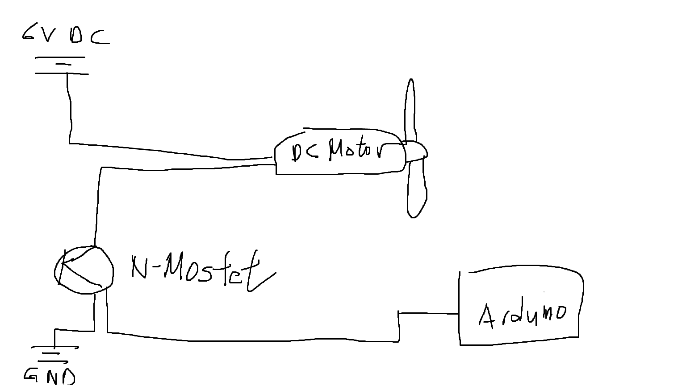
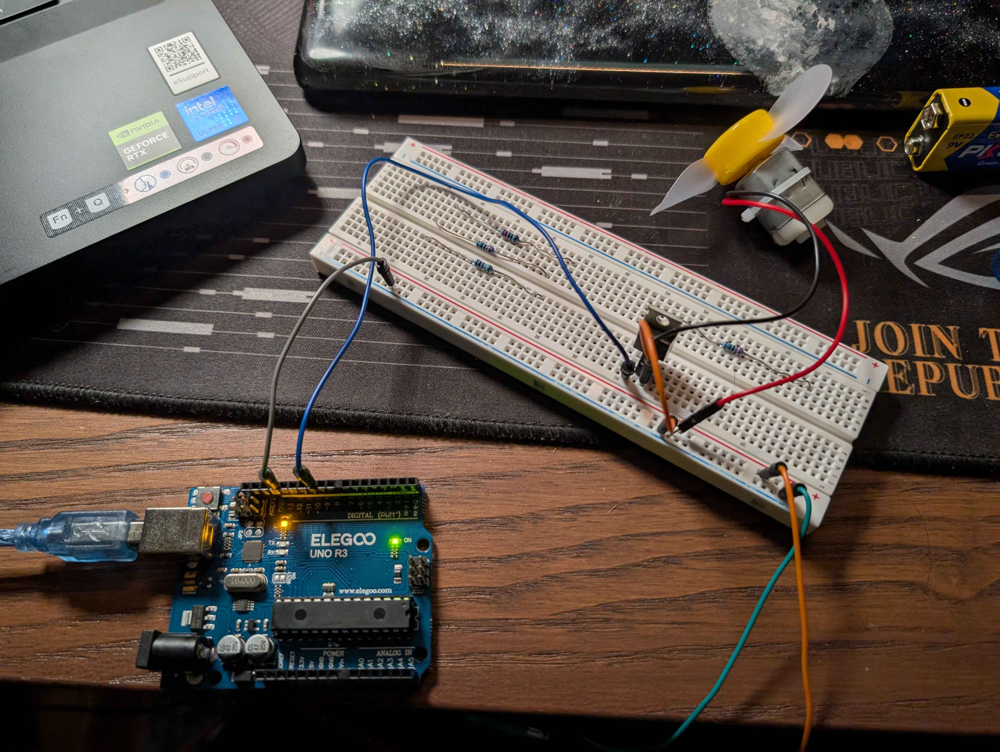

This represents my circuit demo
This represents my circuit schematic
This represents the picture of the complete circuit setup
Here is the code for this project with commenting!
let serial;
let isOn = false;
let btn;
// Set up function use standard boiler plate to set up the web interface and call the relevant functions to establish
// connections!
function setup() {
createCanvas(300, 150);
let saved = localStorage.getItem("motorState");
if (saved !== null) isOn = saved === "true";
btn = createButton(isOn ? "Turn OFF" : "Turn ON");
btn.position(20, 20);
btn.style("padding", "12px 20px");
btn.mousePressed(toggleMotor);
// Use serial tunnel for communication with Arduino
serial = createSerial();
// Button boilerplate
let connectBtn = createButton("Connect Arduino");
connectBtn.position(20, 70);
connectBtn.mousePressed(connectToArduino);
}
// Open the ports
function connectToArduino() {
// p5.webserial uses open() to both request port AND open it
serial.open(9600); // This will prompt the user to select a port // This bug caused me like 5 hours of stress lol
console.log("Opening connection...");
}
// Switch between ON and OFF function with our input button, dictates whether the motor spins or not.
function toggleMotor() {
isOn = !isOn;
btn.html(isOn ? "Turn OFF" : "Turn ON");
localStorage.setItem("motorState", isOn);
sendState();
}
// Send the current state (ON or OFF) to the arduino board, check for errors before proceed.
function sendState() {
if (!serial.opened()) {
console.log("Not connected yet");
return;
}
let value = isOn ? "1" : "0";
serial.write(value);
console.log("Sent:", value);
}
// Display our syntax
function draw() {
background(255);
if (serial.available()) {
let incoming = serial.readLine();
if (incoming) console.log("Arduino:", incoming.trim());
}
textSize(18);
fill(0);
text("Motor is: " + (isOn ? "ON" : "OFF"), 20, 120);
textSize(12);
text("Status: " + (serial.opened() ? "Connected" : "Not connected"), 20, 140);
}
<!-- Base Template Setup -->
<!DOCTYPE html>
<html lang="en">
<head>
<meta charset="UTF-8" />
<meta name="viewport" content="width=device-width, initial-scale=1.0" />
<title>Motor Control</title>
<!-- p5 core -->
<script src="https://cdn.jsdelivr.net/npm/p5@1.9.0/lib/p5.js"></script>
<!-- p5.webserial -->
<script src="https://cdn.jsdelivr.net/gh/gohai/p5.webserial@master/libraries/p5.webserial.js"></script>
<style>
html, body {
margin: 0;
padding: 0;
background: #f0f0f0;
font-family: sans-serif;
}
</style>
</head>
<body>
<script src="index.js"></script>
</body>
</html>
const int motorPin = 10;
void setup() {
Serial.begin(9600);
pinMode(motorPin, OUTPUT);
}
void loop() {
if (Serial.available()) {
char c = Serial.read();
if (c == '1') {
digitalWrite(motorPin, HIGH); // ON
}
if (c == '0') {
digitalWrite(motorPin, LOW); // OFF
}
}
}
Here are some additional Questions: